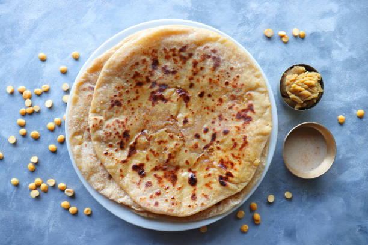

Home
Puran Poli

Description
Puran Poli is a traditional sweet flatbread from Maharashtra made during festivals like Holi , Guddi padwa and Ganesh Chaturthi. It is stuffed with a filling of chana dal(split Bengal gram) and jaggery, flavored with cardomom and nutmeg.
Soft on the outside with a sweet and rich interior, Puran Poli is best served with ghee or milk.It requires some patience but is totally worth the effort!
Ingredients
- 1 cup chana dal (split Bengal garam)
- 1.5 to 1.75 cups water
- 3/4 cup jaggery (or as required)
- 1/4 cardomom poweder
- 1.5 cups of whole wheat flour
- 1-2 tbsp oil or ghee
- Salt as requred
- Water as needed for dough
Steps
- Rinse and pressure cook the chana dal until soft but not mushy.
- Drain excess of water and mash the dal well.
- In a pan,mix mashed dal with jaggery and cook until the mixture thickens.
- Add cardomom and nutmeg(optional).Let the stuffing cool.
- Make dough with wheat flour,water,and a pinch of salt .Rest it for 30 mins.
- Take a portion of dough and flatten it,add stuffing and seal it.
- Roll out gently and cook on a tawa with ghee until golden on both sides.
- Serve warm with ghee or milk.